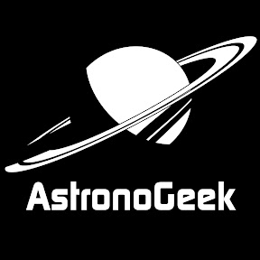

Quelques informations
Planètes Telluriques
Planètes Gazeuses
Recommandation
Astronopedia
Me contacter
Changer de thème

AstronoGeek est une chaine de vulgarisation scientifique qui se concentre principalement sur l'éspace et tout les problèmatiques et les sujets qui en découlent.
Lancé le 4 Octobre 2015 la chaine Youtube a 660k abonnés comptabilise + de 250 vidéos aux sujets variés qui permettront même aux néophytes de s'interesser au sujet vaste et complet qu'est l'espace.
Ce qui fait sa spécialité est le ton avec lequel il aborde ces sujets, en effet il apprécie se moquer des complotistes et des affabulations de certains. C'est pour les raisons évoquées que cette chaine est parfaite pour tous les amateurs de ce vaste univers.